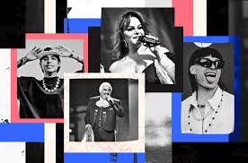

Generos Musicales de Mexico

Mariachi
- Originario de Jalisco, es uno de los generos mas representativos del pais.
- Utiliza instrumentos como la trompeta, el violin, la vihuela y el guitarron.
- Sus letras suelen hablar de amor, patria y tradiciones.
Ranchera
- Genero lirico y apasionado que se interpreta frecuentemente con mariachi.
- Temas comunes: desamor, orgullo, vida rural y sentimientos intensos.
- Grandes exponentes: Vicente Fernandez, Pedro Infante, Lola Beltran.
Son Jarocho
- Originario de Veracruz, mezcla influencias indigenas, africanas y espanolas.
- Instrumentos tipicos: jarana, arpa jarocha, requinto.
- Famosa pieza: La Bamba.
Norteño
- Popular en el norte del pais, con influencia de la polka alemana.
- Instrumentos principales: acordeon y bajo sexto.
- Temas frecuentes: vida cotidiana, trabajo, migracion y corridos.
Banda
- Originaria de Sinaloa, destaca por su potente seccion de metales.
- Incluye clarinetes, trombones, tubas y percusiones.
- Se interpreta en fiestas, bailes y eventos populares.
Corridos
- Genero narrativo que relata historias reales o ficticias.
- Temas: revolucion, personajes historicos, crimen, politica y cultura popular.
- Actualmente se han transformado en corridos tumbados y urbanos.
Pop y Rock en Espanol
- Desde los anos 80, Mexico ha sido cuna de bandas y solistas reconocidos.
- Ejemplos: Cafe Tacvba, Mana, Zoe, Aleks Syntek.
- Fusionan sonidos modernos con identidad mexicana.
Regueton y Urbano
- Genero reciente que ha ganado popularidad entre los jovenes.
- Artistas como Peso Pluma y Santa Fe Klan mezclan ritmos latinos con letras urbanas.
- Influye en moda, redes sociales y cultura juvenil.